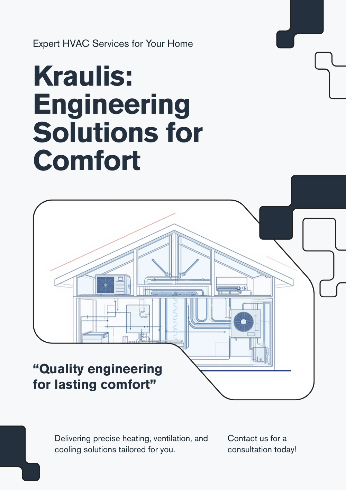
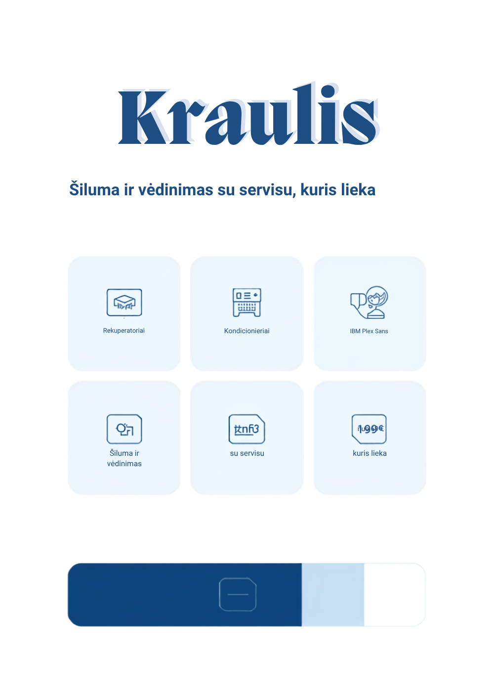
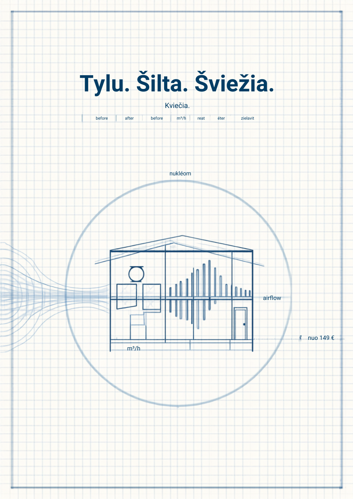

Trys tikrai skirtingos kompozicijos (ne ta pati struktūra kitom spalvom). Kiekvienai: gyvas HTML prototipas (desktop + mobile) ir Canva stiliaus moodboard'as. Visos šviesios, navy tekstui/linijoms, sky retas akcentas.
Renkuosi C („Oro srautas"), su A tikslumo detalėmis. C suteikia Kraulis atpažįstamą inžinerinį charakterį (oro-srauto motyvas, blueprint tinklelis, matavimo žymos, „prieš/po" duomenys) išliekant šviesus ir parduodantis — tai labiausiai nutolsta nuo ankstesnio varianto. A per daug „datasheet" plačiajai auditorijai; B stipriai parduoda, bet mažiausiai išskirtinis. Detalus pagrindimas — apačioje.
ŠVOK servisas kaip tikslus techninis leidinys. Turinys = struktūruoti duomenys su matavimo rail'u, ne kortelių košė.

Šviesus, parduodantis B2C/B2B: aiškus vertės pasiūlymas ir greitas kelias į kategoriją arba servisą.

Kraulis kaip inžinierių studija su charakteriu. Per puslapį eina oro-srauto / matavimo motyvas ant šviesaus blueprint tinklelio — atpažįstamas „parašas".

Pasirink A, B, C arba derinį (pvz. C + A). Pasirinkus — perkursiu visus tikrus puslapius šia kryptimi, atnaujinsiu DESIGN.md ir paskelbsiu.